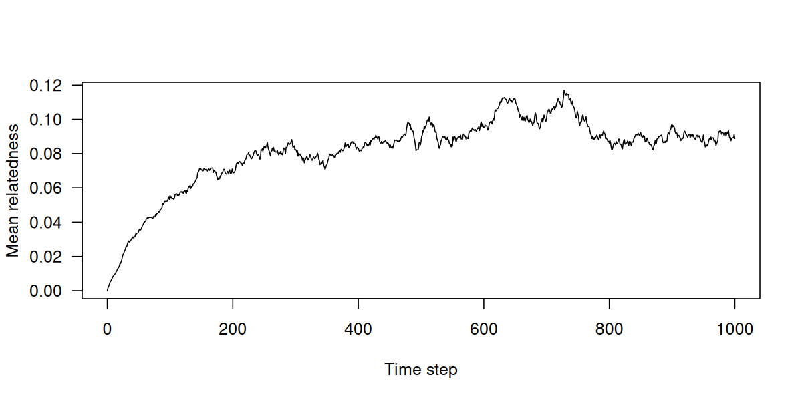

fast relatedness (aka fastrel) is an R package to compute relatedness, relationship or kinship from a pedigree quickly. Its documentation is also available as a website: https://courtiol.github.io/fastrel/.
This package offers five main sets of functionalities:
- a set of functions allowing for updating a relatedness matrix, conceived with individual based simulations in mind, with no need to store a pedigree, and with a computation time and memory footprint that do not increase over time as long as the population is at its demographic equilibrium (it only requires storing the information about alive individuals)
- a function to compute relatedness from a pedigree more quickly than
ggroups,nadiv,kinship2orPedixplorer(which now supersedeskinship2) - a function to compute the inverse of the relatedness matrix (the precision matrix used by animal models), as a sparse matrix built directly from the pedigree, much more quickly than
nadiv - a function to simulate a pedigree (with character or integer identifiers)
- a function to simulate a population with its pedigree, deaths, births, immigrations and emigrations.
The relatedness matrix is here technically defined as the additive relationship matrix, A = 2 × kinship, with diagonal 1 + F. Its values lie between 0 and 2. Between individuals that are not inbred, relatedness is at most 1 (identical twins or clones; 0.5 for parent and offspring or full siblings), and it can only exceed 1 with inbreeding.
This is the measure returned by default: 0.5 for parent and offspring, not the 0.25 of the kinship coefficient returned by kinship2::kinship(). The kinship coefficient, Wright’s coefficient of relationship and Hamilton’s regression coefficient of relatedness can be returned instead (see Measures of relatedness).
All four measures are validated in the tests of the package against three independent implementations, kinship2, ggroups and nadiv, on pedigrees of many shapes (with inbreeding, selfing, unknown parents and unsorted rows).
| Task | Functions |
|---|---|
| Relatedness of a whole pedigree |
fastrel_ped() (from a data frame), fastrel_vec() (from vectors) |
| Inverse of the relatedness matrix (sparse) | fastrel_inv() |
| Relatedness updated step by step (the “store”) |
rel_new(), rel_add(), rel_remove(), rel_get()
|
| Content of a relatedness store |
rel_ids(), rel_size(), rel_capacity()
|
| Copying, saving and restoring a store |
rel_copy(), rel_save(), rel_load()
|
| Simulating data |
sim_ped(), sim_pop()
|
Installation
The installation requires the compilation of the C++ code, so you need a C++ compiler installed:
- on Linux, those are often installed by default
- on Windows, you will need Rtools (same version as your R)
- on MacOS, you will need Apple Command Line Tools or equivalent.
You may then use pak to install the package:
if (!requireNamespace("pak")) {
install.packages("pak")
}
pak::pkg_install("courtiol/fastrel")Basic examples
Compute the relatedness of a whole pedigree at once
library(fastrel)
set.seed(1) # for reproducibility
ped <- sim_ped(1000)
tail(ped, n = 3) # last 3 individuals## id dadid momid sex
## 998 ind0998 ind0959 ind0989 1
## 999 ind0999 <NA> ind0912 1
## 1000 ind1000 ind0879 ind0871 1
A <- fastrel_ped(ped) # same as fastrel_vec(ped$id, dadid = ped$dadid, momid = ped$momid)
A[998:1000, 998:1000] # relatedness matrix between those 3 individuals## ind0998 ind0999 ind1000
## ind0998 1.03676886 0.06467905 0.10907260
## ind0999 0.06467905 1.00000000 0.03918678
## ind1000 0.10907260 0.03918678 1.05214919## [1] 0.3335501Compute the relatedness incrementally (for simulations)
rel <- rel_new() # initialize the store (once per simulation)
rel_add(rel, data.frame(id = c("A", "B"), dad = NA, mom = NA)) # add founders
rel_add(rel, data.frame(id = c("C", "D"), dad = c(NA, "B"), mom = c("A", "A"))) # add births
rel_remove(rel, c("A", "B")) # remove dead / emigrated: free their slots
rel_get(rel) # extract relatedness matrix between remaining individuals## C D
## C 1.00 0.25
## D 0.25 1.00fastrel_ped() and rel_add() find the columns they need by their names, and the usual names are recognised (e.g. id, focal or animal; mom, mum, mother or dam; dad, father or sire; with or without id, as in momid or mother_id): see ?fastrel_ped for the list.
Measures of relatedness
By default, the package returns the additive relationship A = 2 × kinship (diagonal 1 + F, where F is the inbreeding coefficient). fastrel_ped(), fastrel_vec() and rel_get() can return three other measures with their argument metric:
metric |
Measure | Definition | Range | Typical use |
|---|---|---|---|---|
"additive" (default) |
additive (numerator) relationship | A = 2 × kinship | 0 to 2 | covariance of breeding values (animal models, heritability) |
"kinship" |
kinship (coancestry) coefficient | probability that two alleles drawn at random, one from each individual, are identical by descent | 0 to 1 | probability of identity by descent; same as kinship2::kinship()
|
"wright" |
Wright’s coefficient of relationship | correlation between genetic values, cov2cor(A)
|
0 to 1 | genetic resemblance compared with that of an individual to itself (1 = as similar as an individual is to itself), whatever the inbreeding |
"hamilton" |
regression coefficient of relatedness | regression of the recipient’s genetic value on the actor’s, A[i, j] / A[i, i] | 0 to 1 | the r of Hamilton’s rule (kin selection); not symmetric: rows are actors |
Without inbreeding, all measures except the kinship coefficient are identical (0.5 for parent and offspring or full siblings, 0.25 for half siblings), and the kinship coefficient is half of them. The measures only differ with inbreeding, as in this pedigree where an individual (P) is obtained by selfing a founder (G), and two individuals (O1, O2) by selfing P:
ped_selfing <- data.frame(id = c("G", "P", "O1", "O2"),
dad = c(NA, "G", "P", "P"),
mom = c(NA, "G", "P", "P"))
fastrel_ped(ped_selfing) # additive relationship## G P O1 O2
## G 1 1.0 1.00 1.00
## P 1 1.5 1.50 1.50
## O1 1 1.5 1.75 1.50
## O2 1 1.5 1.50 1.75
fastrel_ped(ped_selfing, metric = "kinship") # probabilities## G P O1 O2
## G 0.5 0.50 0.500 0.500
## P 0.5 0.75 0.750 0.750
## O1 0.5 0.75 0.875 0.750
## O2 0.5 0.75 0.750 0.875
fastrel_ped(ped_selfing, metric = "wright") # correlations## G P O1 O2
## G 1.0000000 0.8164966 0.7559289 0.7559289
## P 0.8164966 1.0000000 0.9258201 0.9258201
## O1 0.7559289 0.9258201 1.0000000 0.8571429
## O2 0.7559289 0.9258201 0.8571429 1.0000000
fastrel_ped(ped_selfing, metric = "hamilton") # regressions (row = actor)## G P O1 O2
## G 1.0000000 1.0000000 1.0000000 1.0000000
## P 0.6666667 1.0000000 1.0000000 1.0000000
## O1 0.5714286 0.8571429 1.0000000 0.8571429
## O2 0.5714286 0.8571429 0.8571429 1.0000000The additive relationship is the default because it keeps all the information: the three other measures can be computed from it, while the diagonal of 1 of Wright’s coefficient, for instance, discards the inbreeding coefficients. It is also the matrix that animal models and other mixed models expect, as the covariance of the genetic values, and what ggroups::buildA(), nadiv::makeA() and 2 * kinship2::kinship() return. Wright’s coefficient is the one to choose for a measure of resemblance bounded by 1 whatever the inbreeding, but it should not be used as a covariance matrix in a model, since it gives every individual a variance of 1 whatever its inbreeding.
See ?relatedness_metrics for the definitions, their interpretation and the references.
Inverse of the relatedness matrix
Animal models and other mixed models of genetic values can be fitted with the inverse of the relatedness matrix, A⁻¹ (the precision matrix of the genetic values), rather than with A. While A is dense in most pedigrees (nearly all individuals of a population end up sharing an ancestor), A⁻¹ is always sparse: each individual adds at most six entries to its upper triangle. fastrel_inv() builds it directly from the pedigree, with the rules of Henderson (1976) and the inbreeding coefficients computed with the algorithm of Meuwissen and Luo (1992), without ever forming A. The memory used is thus proportional to the number of individuals, and A⁻¹ can be obtained for pedigrees far too large for A to fit in memory:
Ainv <- fastrel_inv(ped_selfing)
Ainv## 4 x 4 sparse Matrix of class "dsCMatrix"
## G P O1 O2
## G 3 -2 . .
## P -2 10 -4 -4
## O1 . -4 4 .
## O2 . -4 . 4
all.equal(as.matrix(Ainv), solve(fastrel_ped(ped_selfing))) # it is the inverse of A## [1] TRUE
set.seed(1)
big <- sim_ped(20000) # A would take 3.2 GB
system.time(Ainv <- fastrel_inv(big))## user system elapsed
## 3.159 0.019 3.161
Matrix::nnzero(Ainv) # number of nonzero entries## [1] 130866The result is a sparse matrix from the package Matrix, which can be given as it is to modelling packages, e.g. e.g. as covStruct=list(precision=Ainv) in spaMM::fitme() or ginverse=list(var=Ainv) in MCMCglmm::MCMCglmm().
Using the store in a simulation
The store created by rel_new() is an object that keeps the relatedness matrix among the individuals currently in it, and that rel_add() and rel_remove() update directly (there is no need to reassign their result). Each individual in the store occupies a slot, i.e. one row and the matching column of that matrix; removing an individual frees its slot for an individual added later. This section explains how to use the store well.
Who to keep and who to remove
Keep an individual in the store for as long as it can still become a parent, or for as long as you want to know its relatedness to others. Remove everybody else (dead, emigrated, …) with rel_remove().
Removing every individual that can no longer become a parent implies that the computational cost of adding a birth to the stored relatedness information and the memory used depend on the number of individuals in the store, not on the length of the pedigree.
Removal is final: an individual that was removed must not be added again, since its relatedness with the individuals born in the meantime is unknown (it would come back as unrelated to everybody).
A complete example
sim_pop() simulates a population with births, deaths, emigration and immigration, and returns the step at which each individual arrives and leaves. Here we replay it with a store, adding the arrivals and removing the departures at each step, and we record the mean relatedness among the individuals present:
rel <- rel_new()
set.seed(1)
pop <- sim_pop(n_steps = 1000, n_init = 200) # simulate pop (fine tuning the life history is possible)
head(pop) # first 6 simulated individual life histories (no dadid and momid since founder)## id dadid momid sex arrival exit fate origin
## 1 ind00000001 <NA> <NA> 1 0 20 emigrated founder
## 2 ind00000002 <NA> <NA> 2 0 7 dead founder
## 3 ind00000003 <NA> <NA> 1 0 2 dead founder
## 4 ind00000004 <NA> <NA> 1 0 7 dead founder
## 5 ind00000005 <NA> <NA> 2 0 3 dead founder
## 6 ind00000006 <NA> <NA> 1 0 22 dead founder
mean_relatedness <- data.frame(step = 0:1000, mean_rel = NA) # record mean relatedness
for (t in 0:1000) {
rel_add(rel, pop[pop$arrival == t, c("id", "dadid", "momid")])
rel_remove(rel, pop$id[!is.na(pop$exit) & pop$exit == t])
A <- rel_get(rel)
mean_relatedness[mean_relatedness$step == t, "mean_rel"] <- mean(A[upper.tri(A)])
}
plot(mean_rel ~ step, data = mean_relatedness,
type = "l", las = 1,
ylab = "Mean relatedness", xlab = "Time step")

Although 27150 individuals were simulated in total, the store never held more than a few hundred of them at once:
rel_size(rel) # individuals currently in the store## [1] 241Metapopulations
To model a metapopulation, use a single store for all the patches and keep the migrants in it: remove an individual only when it dies or leaves the metapopulation for good. Keep track of the patch of each individual on your side, and extract a patch with rel_get(rel, ids_of_the_patch). Migrants then keep their relatedness with the relatives they left behind and with the offspring they produce elsewhere.
rel <- rel_new(remember_removed = "fingerprint")
rel_add(rel, data.frame(id = c("a1", "a2", "b1", "b2"), dad = NA, mom = NA))
patch <- c(a1 = "A", a2 = "A", b1 = "B", b2 = "B") # the patch of each individual
rel_add(rel, data.frame(id = "a3", dad = "a2", mom = "a1")) # a3 is born in patch A...
patch["a3"] <- "B" # ... and moves to patch B
rel_add(rel, data.frame(id = "b3", dad = "a3", mom = "b1")) # where it reproduces
patch["b3"] <- "B"
rel_get(rel, names(patch)[patch == "B"]) # relatedness within patch B## b1 b2 a3 b3
## b1 1.0 0 0.0 0.5
## b2 0.0 1 0.0 0.0
## a3 0.0 0 1.0 0.5
## b3 0.5 0 0.5 1.0
rel_get(rel)["b3", "a1"] # b3 remains related to its grandparent in patch A## [1] 0.25In that case we recommend creating the store with rel_new(remember_removed = "fingerprint"), as above: rel_add() then raises an error if an individual that was removed is added again, a mistake that is easy to make when individuals move between patches. This is off by default because it costs about 30 bytes per individual removed, so the memory used then grows (slowly) with the length of the pedigree. This trace relies on a fingerprint of each identifier, which could in principle be mistaken for that of another one, with a negligible probability; rel_new(remember_removed = "id") keeps the identifiers themselves instead, which can never be wrong but takes more memory (about 70 bytes per individual removed for short identifiers). See ?rel_new for details.
Benchmarks
The relatedness metrics are computed much faster by fastrel than by ggroups, kinship2 or nadiv under virtually all conditions. Here is an example, using a pedigree simulated with integer identifiers and 0 for unknown parents, which suits all four packages:
library(microbenchmark)
library(ggroups)
library(kinship2)
library(nadiv)
set.seed(1) # for reproducibility
ped <- sim_ped(1000, numeric_ids = TRUE)
head(ped, n = 3)## id dadid momid sex
## 1 1 0 0 1
## 2 2 0 0 2
## 3 3 0 0 1
# benchmark
microbenchmark(ggroups = buildA(ped[, c("id", "dadid", "momid")]),
nadiv = makeA(ped[, c("id", "momid", "dadid")]), # sparse matrix
kinship2 = kinship(ped$id, ped$dadid, ped$momid),
fastrel_vec = fastrel_vec(ped$id, ped$dadid, ped$momid,
metric = "kinship"),
fastrel_ped = fastrel_ped(ped))## Unit: microseconds
## expr min lq mean median uq
## ggroups 103417.663 107482.550 123956.040 115789.660 119202.160
## nadiv 140993.970 151990.894 160865.795 155400.333 163162.046
## kinship2 11355.091 23382.626 32280.682 24145.208 34794.615
## fastrel_vec 1120.628 1190.670 6213.938 1316.283 2490.677
## fastrel_ped 907.746 1040.597 5863.974 1126.590 2458.561
## max neval cld
## 464688.8 100 a
## 461525.1 100 b
## 231321.7 100 c
## 220612.8 100 d
## 214948.1 100 dYou can also run the more detailed integrated benchmarks as follows:
source(system.file("benchmarks/relstore_benchmark.R", package = "fastrel")) # fastrel vs kinship2
source(system.file("benchmarks/sim_pop_benchmark.R", package = "fastrel")) # fastrel vs simulation steps
source(system.file("benchmarks/precision_benchmark.R", package = "fastrel")) # fastrel_inv() vs nadiv
source(system.file("benchmarks/memory_benchmark.R", package = "fastrel")) # memory usedDevelopment
AI/LLMs disclaimer
Most of this package was written with the help of large language models (LLMs), such as Claude Fable 5.2. The increase in computational speed has been achieved by relying heavily on a C++ implementation (rather than pure R code). The results have been cross-checked using alternative LLMs and compared to the output of established packages (kinship2, ggroups and nadiv). Many tests have also been implemented to ensure the results are accurate.
Tips for developers
After editing README.Rmd, do:
knitr::knit("README.Rmd") # Knit in RStudio does not update README.md!After editing C++ attributes, do:
Rcpp::compileAttributes() # or "Build/Document" in RStudio To generate the manual, do:
devtools::build_manual()To build the website locally (it is otherwise built and published by GitHub Actions after each push to main), do:
pkgdown::build_site()